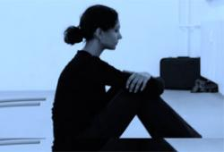

پذيرش > سایت نوشته ها > طاهره قرهالعین و فروغ فرخزاد در دو تابلو


 طاهره قرهالعین و فروغ فرخزاد در دو تابلو طاهره قرهالعین و فروغ فرخزاد در دو تابلو
4 شهریور 1390 - - نسخه قابل چاپ
نمایش تازهای از نیلوفر بیضایی در باره زندگی عاطفی و فکری طاهره قرهالعین و فروغ فرخزاد، دو شاعر آزاده ایرانی بهزودی روی صحنه میآید.
به گزارش بخش فرهنگ رادیو زمانه، مرحله نخست تمرینهای نمایش تازه نیلوفر بیضایی، نمایشنامهنویس و کارگردان تئاتر ایران در تبعید، بهتازگی به پایان رسیده است و در پاییز ۲۰۱۱ (۱۳۹۰ خورشیدی) این نمایش با عنوان «چهره به چهره در آستانه فصلی سرد» توسط گروه تئاتر «دريچه» و با بازی بهرخ بابایی، نیلوفر بیژنزاده و یگانه طاهری روی صحنه خواهد آمد.
در حال حاضر سه اجرا برای نمايش «چهره به چهره در آستانه فصلی سرد» در نظر گرفته شده است.
اين نمايش ششم اکتبر برای نخستين بار در يوتبوری در کشور سوئد در چارچوب جشنواره سینمای تبعید روی صحنه میرود و سپس در ۲۹، ۳۰ و چهار دسامبر در فرانکفورت و سرانجام در ۱۲ نوامبر در شهر کلن آلمان در چارچوب جشنواره تآتر ایرانی اجراهايی خواهد داشت.
نیلوفر بیضایی، کارگردان تئاتر درباره چگونگی نوشتن «چهره به چهره در آستانه فصلی سرد» به بخش فرهنگ رادیو زمانه گفت: «وقتی شروع به نوشتن متن نمایش کردم، بهطور غیر منتظرهای متن طاهره قرهالعین بهسراغام آمد؛ متنی که سالها برای نوشتناش اطلاعات جمع کرده بودم ولی نمیتوانستم آن را بنویسم. این بار اما متن به خودی خود آمد و شد تابلوی اول نمایشام و تابلوی دوم هم شد فروغ فرخزاد و نام نمایش شد: چهره به چهره در آستانه فصلی سرد.»
«چهره به چهره در آستانه فصلی سرد» از دو تابلو تشکیل شده است. تابلوی نخست به «طاهره قرهالعین» اختصاص دارد و تابلو دوم به «فروغ فرخزاد».
تابلوی اول به کلی توسط نیلوفر بیضایی نوشته شده و متن تابلوی دوم از مصاحبهها، نامهها و بخشهایی از اشعار فروغ فرخزاد برگرفته شده است.
در هر دو تابلو سه بازیگر زن حضور دارند. در حالیکه در تابلوی نخست، بازیگر نقش طاهره ثابت میماند، در تابلوی دوم، جنبههای گوناگون شخصیت فروغ میان سه بازیگر تقسیم شده است.
زرینتاج برغانی ملقب به طاهره قرهالعین، نخستین زنی بود که در ایران از برابری زن و مرد سخن گفت. وی همچنین نخستین زن در تاریخ ایران بود که در اجتماع بابیها در منطقه بدشت کشف حجاب کرد و میگویند غوغایی برانگیخت.
قرهالعین که در حلقه نزدیکان محمدعلی شیرازی معروف به باب قرار داشت و عروس محمدتقی برغانی معروف به شهید ثالث از علمای شیعه بود، پس از ترور ناصرالدینشاه قاجار دستگیر شد و در ماجرای بابیکشی، او را مخفیانه به باغی بردند و پای درخت نسترن او را خفه کردند.
بخش عمدهای از اشعار طاهره قرهالعین از بین رفته است، اما چند شعر از او به جایمانده که از شوریدگی طبع او، آزادگی و همچنین تسلطش بر شعر و ادب فارسی نشان دارد.
در نخستین تابلو از نمایش «چهره به چهره در آستانه فصلی سرد» در حلقهای از نزدیکان طاهره قرهالعین با اندیشههای آزادیخواهانه او و شرایطی که در نهایت باعث شد قرهالعین خانه و کاشانه را ترک کند و به قیام بابیان بپیوندد آشنا میشویم.
در تابلوی دوم، نیلوفر بیضایی بر اساس نامهها، اسناد و روایاتی که از فروغ فرخزاد، شاعر نامدار ایرانی در سالهای دهه ۳۰ و ۴۰ خورشیدی به جایمانده، تصویری از روحیه، اندیشهها و منش اجتماعی و خانوادگی فروغ، و همچنین خواستهها و انتظارات او از زندگی بهدست میدهد.
نیلوفر بیضایی از سال ۱۹۸۵ در تبعید آلمان بهسر میبرد. او در رشتههای ادبیات آلمانی، تئاتر- سینما و تلویزیون و تعلیم و تربیت از دانشگاه فرانکفورت تحصیل نمود و در سال ۱۹۹۴ گروه تئاتر دریچه را پایهگذاری کرد و به نمایشنامهنویسی و کارگردانی تئاتر پرداخت.
از مهمترین مضامین آثار نمایشی او هویتجویی و بیگانگی انسان ایرانی، مشکلات اجتماعی و خانوادگی زنان در پیشزمینه تبعیض جنسیتی و نیز حقوق اقلیتهای مذهبی و جنسی است.
اجرای آخرين نمايش وی، «یک پرونده، دو قتل»، در اکتبر ۲۰۰۹ آغاز شد و تا تابستان ۲۰۱۰ ادامه یافت.
نیلوفر بیضایی از اعضای هیأت دبیران خانه آزادی بیان است.
رادیو زمانه
ارسال به
بالاترین
،
توییتر
،
فریندفید
،
فیسبوک
در همين بخش :
 یک خبر تلخ؟ یک قانونشکنی؟ یک تصمیم بخشنامهای جدید؟ یک خبر تلخ؟ یک قانونشکنی؟ یک تصمیم بخشنامهای جدید؟
چرا بایست به سکسوالیته پرداخت؟ / نفیسه آزاد
آزارجنسی خانگی؛ «قربانی» نه، «نجات یافته»
زنان، بزرگترین بازندگان بهار عرب
سانسور از دیدگاه جنسیتی/الهه امانی
ديگر بخش ها :
طرح یک میلیون امضا
|
مقالات
|
سایت نوشته ها
|
اخبار
|
گزارش كمپين
|
گفت و گو
|
علیه سکوت
|
كوچه به كوچه
|
نامه های شما
|
گزارش ویژه
|
گفتگو با اعضا
|
ویژه سالگرد کمپین
|
تصویر برابری
|
دل آرام علی
|
تریبون
|
مقالات
|
تاریخ شفاهی
|
خارج از چارچوب
|
کتابخانه
|
درباره کمپین
|
کمپین در شهرها
|
کمپین در بند
|
صدای تغییر
|
ویژه 22 خرداد
|
لایحه حمایت از خانواده
|
گالری
|
عشا مومنی
|
امیر یعقوبعلی
|
خدیجه مقدم
|
راحله عسگری زاده و نسیم خسروی
|
پروین اردلان،جلوه جواهری، مریم حسین خواه، ناهید کشاورز
|
زینب پیغمبرزاده
|
سعیده امین، سارا ایمانیان، محبوبه حسین زاده، ناهید کشاورز و همایون نامی
|
احترام شادفر
|
نسیم سرابندی زاده،فاطمه دهدشتی
|
وبلاگ مهمان
|
پرونده خرم آباد
|
دستگیری ها
|
مریم مالک
|
پرستو اللهیاری
|
مهرنوش اعتمادی
|
سمیه رشیدی
|
Other Languages
|
همراهان
|
«فراخوان کمپین ده روز با بهاره هدایت»
| English
|